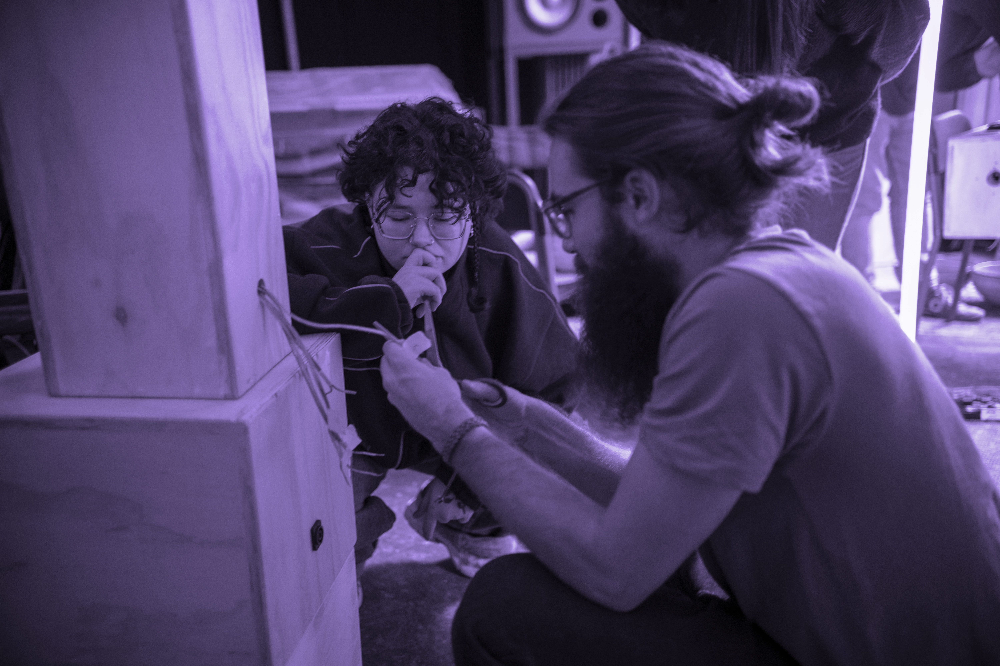

Systems
Acousmonium


During a study trip to Milan, we collaborated with Audior on the design and construction of an acousmonium. The process included acoustic calculations, selecting and assembling speaker components, and building the individual loudspeaker cabinets.
Following the construction of the system, I composed Splinters, a piece created specifically for spatial performance on the acousmonium. The composition explores the distribution and movement of sound across the different loudspeakers and their individual sonic characteristics.
The version presented here is a stereo mix of the original multichannel composition.
Coding
WeatherSynth
A Weather-Driven Digital Synthesizer
Digital Playground
HOLD TO DRAW